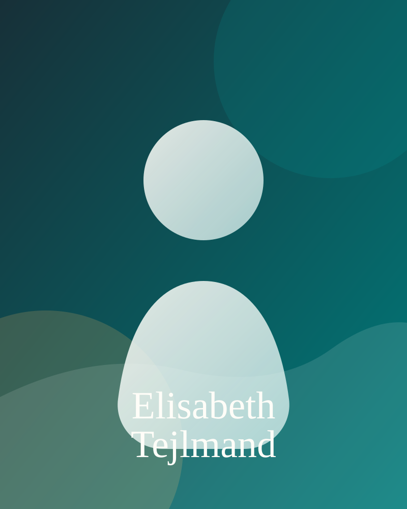

Om guiden
Guide til Middelfart
Et kurateret møde med Middelfart skabt af 25 års lokalinteresse. Sat sammen så du kan nyde byen i dit eget tempo.
Målet er at skabe en personlig kulturguide til små ruter, gode stop og steder, der er værd at give lidt ekstra opmærksomhed. Den begynder med Keramikruten og vil vokse derfra med fortællinger, der forbinder kunst, byrum og lokale omveje.
Lad telefonen hjælpe dig videre, men husk at standse op og kigge dig omkring. Først da begynder oplevelserne.

Hvem er vi?
Tejlmand+ Infostorm
Tejlmand+ Infostorm arbejder med formidling og digitale fortællinger. Omtale kan ikke købes eller bestilles. Vi er ikke eksperter men faktatjekker alle informationer. Vores rolle er at finde, samle og formidle historier, der kan åbne et sted for andre. Den dybere faglige viden findes hos museerne, arkiverne, forskerne, kunstnerne og de øvrige fagpersoner, som arbejder med området.